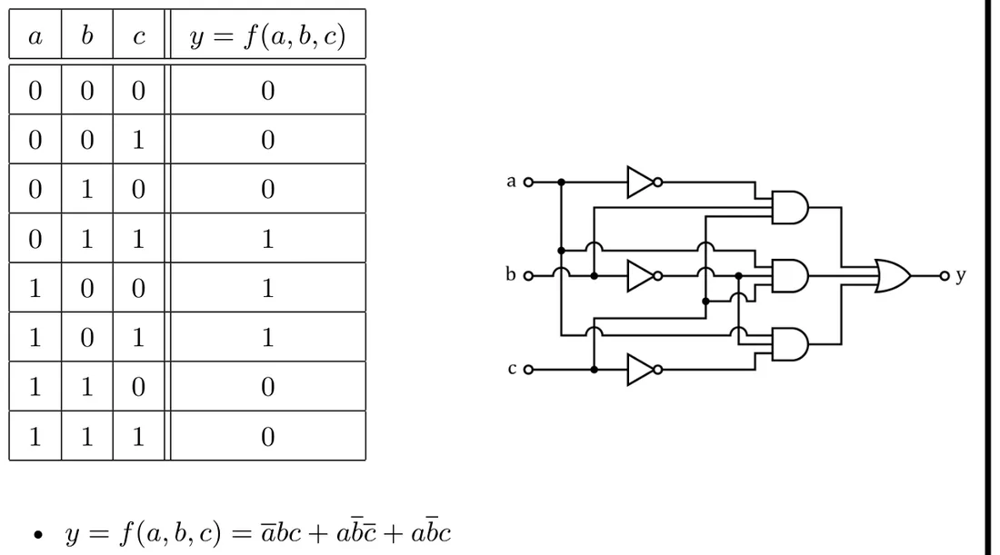
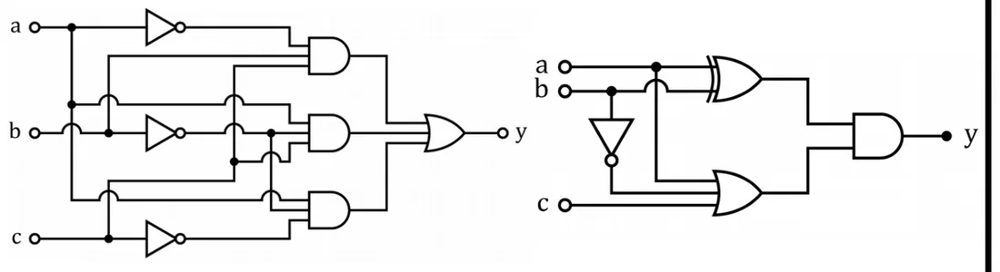
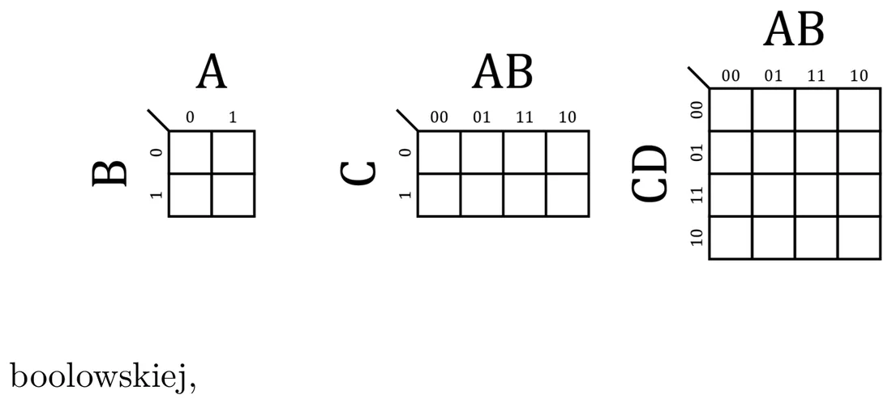
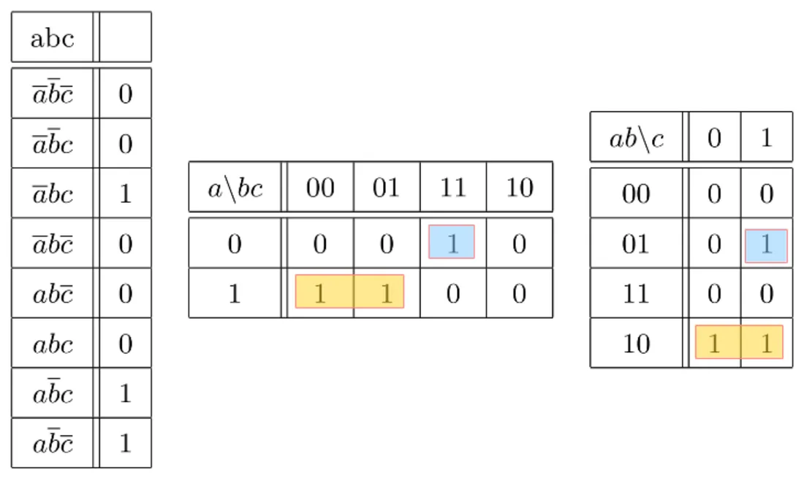
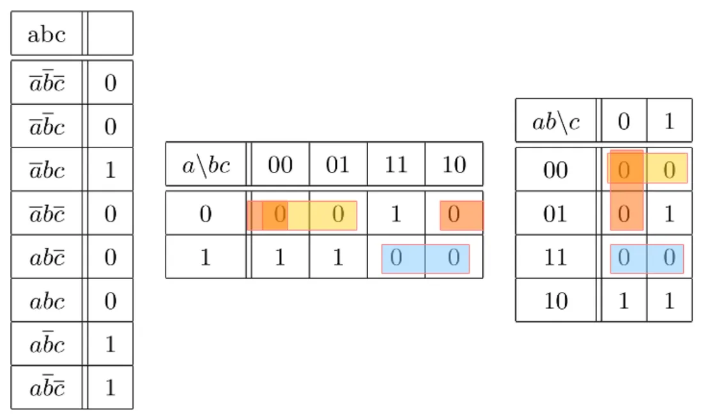
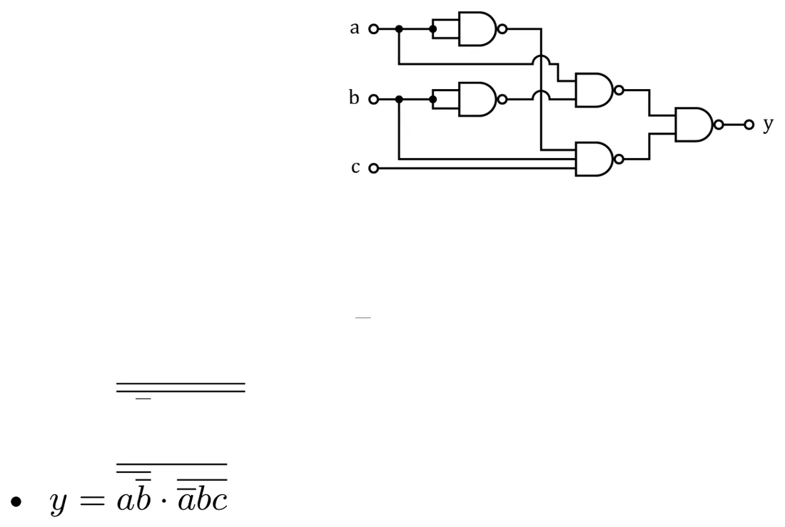
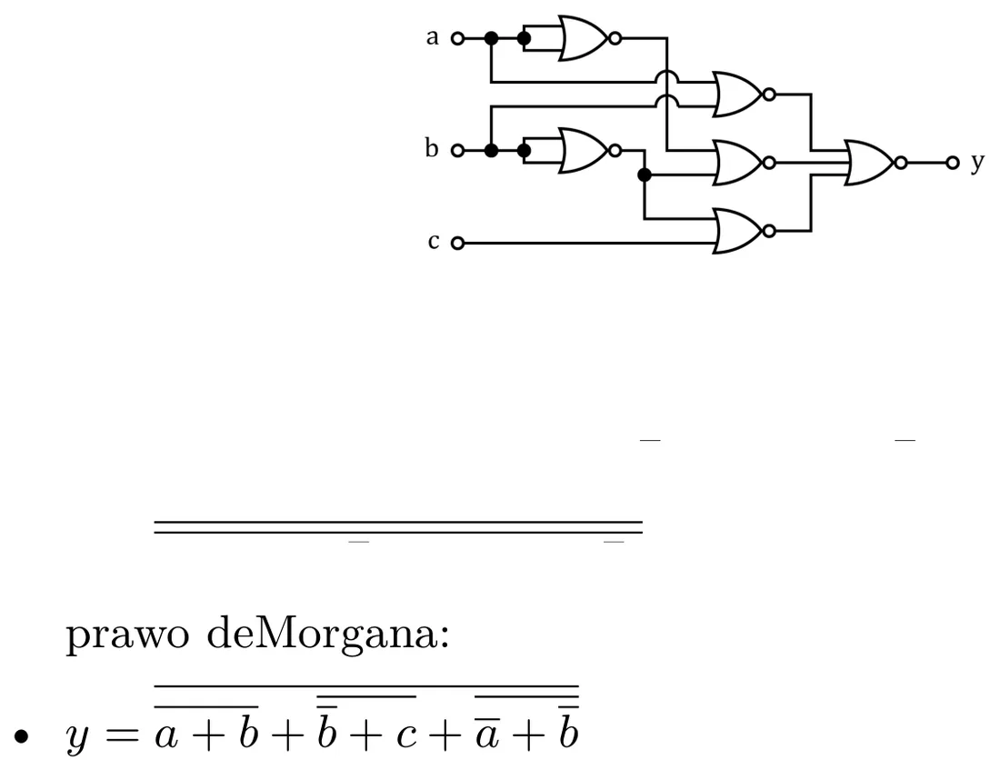

Od tabeli prawdy do wzoru
Weźmy funkcję trzech zmiennych z wykładu:
| Nr | a | b | c | y |
|---|---|---|---|---|
| 0 | 0 | 0 | 0 | 0 |
| 1 | 0 | 0 | 1 | 0 |
| 2 | 0 | 1 | 0 | 0 |
| 3 | 0 | 1 | 1 | 1 |
| 4 | 1 | 0 | 0 | 1 |
| 5 | 1 | 0 | 1 | 1 |
| 6 | 1 | 1 | 0 | 0 |
| 7 | 1 | 1 | 1 | 0 |
Postać sumacyjna (po jednym iloczynie na każdą jedynkę — patrz wykład 6):


Zrealizowana „wprost” wymaga trzech negatorów, trzech 3-wejściowych bramek AND i bramki OR. Czy da się mniej?
Przekształcanie wzoru
Korzystając z praw algebry Boole'a, można wzór upraszczać:
(bo + c = 1). Na wykładzie pokazano też dalsze przekształcenie do postaci (a + b)(a + + c). Wszystkie te wzory opisują tę samą funkcję — są równoważne, więc równoważne są też ich układy.


Po co minimalizować? Żeby układ był tańszy. Można dążyć do:
- mniejszej liczby bramek,
- mniejszej liczby wejść bramek,
- mniejszej różnorodności bramek (np. same NAND),
- krótszego czasu projektowania.
Przekształcanie „na piechotę” jest żmudne i łatwo coś przeoczyć. Stąd mapy Karnaugha.
Kod Graya
W kodzie Graya dwa kolejne słowa różnią się tylko jednym bitem. Dotyczy to także ostatniego i pierwszego (kod jest cykliczny). Dla dwóch bitów: 00, 01, 11, 10 — to trzeba znać na pamięć.
Reguła sklejania
Jeśli dwa iloczyny różnią się tylko jedną zmienną (w jednym jest zanegowana, w drugim nie), to można je zastąpić jednym — bez tej zmiennej. Przykład: bc + b = b.
I tu wchodzi kod Graya: jeśli wiersze tabeli ustawimy w kolejności Graya, to iloczyny, które da się skleić, leżą obok siebie.
Mapa Karnaugha
Mapa Karnaugha to tabela prawdy narysowana jako prostokąt, w którym wiersze i kolumny są opisane w kolejności kodu Graya. Każda kratka to jeden wiersz tabeli prawdy.


Nasza funkcja na mapie (a w wierszach, bc w kolumnach):
| a \ bc | 00 | 01 | 11 | 10 |
|---|---|---|---|---|
| 0 | 0 | 0 | 1 | 0 |
| 1 | 1 | 1 | 0 | 0 |
Uwaga
Kolumny idą w kolejności 00, 01, 11, 10, a nie 00, 01, 10, 11. Najczęstszy błąd na ćwiczeniach to wpisanie wartości z wierszy 2 i 3 tabeli prawdy w złe kolumny.
Grupowanie jedynek → postać sumacyjna


Zasady z wykładu:
- Grupujemy jedynki sąsiadujące w poziomie lub w pionie, w liczbie będącej potęgą dwójki (1, 2, 4, 8…).
- Z każdej grupy powstaje jeden iloczyn. Wyrzucamy zmienną, która w grupie się zmienia; zostają te, które są stałe.
- Zmienna stała równa 1 wchodzi bez negacji, równa 0 — z negacją.
Dla naszej mapy:
- grupa dwóch jedynek w wierszu a = 1, kolumny 00 i 01: zmienia się c, stałe są a = 1 i b = 0 → a,
- samotna jedynka w kratce a = 0, bc = 11 → bc.
Grupowanie zer → postać iloczynowa


To samo, ale grupujemy zera, a z każdej grupy powstaje suma. Zmienną, która się zmienia, wyrzucamy, a pozostałe negujemy (zmienna równa 0 wchodzi bez negacji, równa 1 — z negacją).
- zera w wierszu a = 0, kolumny 00 i 01: stałe a = 0, b = 0 → (a + b),
- zera w kolumnie 10 (oba wiersze): stałe b = 1, c = 0 → ( + c),
- zera w wierszu a = 1, kolumny 11 i 10: stałe a = 1, b = 1 → ( + ).
Obie postacie są równoważne — po wymnożeniu nawiasów i uproszczeniu dostaje się a + bc.
Zasady grupowania, o których łatwo zapomnieć
Na slajdzie jest tylko reguła „w pionie albo w poziomie, w ilości będącej potęgą dwójki”. W praktyce (i na ćwiczeniach z funkcją 4 zmiennych) potrzebne są jeszcze:
- Grupa musi być prostokątem: 1×2, 2×2, 1×4, 2×4… (nie „L”, nie po skosie).
- Krawędzie mapy się stykają: lewa kolumna sąsiaduje z prawą, górny wiersz z dolnym. Cztery rogi też mogą tworzyć jedną grupę.
- Grupy powinny być jak największe (większa grupa = krótszy iloczyn) i ma ich być jak najmniej.
- Grupy mogą na siebie zachodzić — jedynkę wolno użyć wiele razy.
- Każda jedynka musi trafić do co najmniej jednej grupy.
- Grupa 2 kratek usuwa 1 zmienną, 4 kratek — 2 zmienne, 8 kratek — 3 zmienne.
✚ Przykład własny: funkcja czterech zmiennych
y = Σ(0, 1, 2, 5, 8, 9, 10), zmienne a, b, c, d (wiersz = ab, kolumna = cd):
| ab \ cd | 00 | 01 | 11 | 10 |
|---|---|---|---|---|
| 00 | 1 | 1 | 0 | 1 |
| 01 | 0 | 1 | 0 | 0 |
| 11 | 0 | 0 | 0 | 0 |
| 10 | 1 | 1 | 0 | 1 |
Numery kratek: wiersz 00 → 0, 1, 3, 2; wiersz 01 → 4, 5, 7, 6; wiersz 11 → 12, 13, 15, 14; wiersz 10 → 8, 9, 11, 10.
Grupy:
- kratki 0, 1, 8, 9 — wiersze 00 i 10 (górny i dolny się stykają), kolumny 00 i 01. Stałe: b = 0, c = 0 →
- kratki 0, 2, 8, 10 — cztery rogi. Stałe: b = 0, d = 0 →
- kratki 1 i 5 — kolumna 01, wiersze 00 i 01. Stałe: a = 0, c = 0, d = 1 → d
Zamiast 7 iloczynów po 4 zmienne — trzy krótkie.
Realizacja na samych bramkach NAND
Bierzemy postać sumacyjną, negujemy ją dwa razy (nic się nie zmienia) i „wewnętrzną” negację rozbijamy prawem de Morgana:


Każdy iloczyn z kreską to bramka NAND, a kreska nad całością — jeszcze jedna NAND. W praktyce: układ „AND-y, potem OR” zamienia się na „NAND-y, potem NAND” o tej samej strukturze. Negacje pojedynczych zmiennych też robi się NAND-em ze zwartymi wejściami.
Realizacja na samych bramkach NOR
Bierzemy postać iloczynową i robimy to samo:


Układ „OR-y, potem AND” zamienia się na „NOR-y, potem NOR”.
Krótka ściąga
Chcesz NAND → grupuj jedynki (postać sumacyjna). Chcesz NOR → grupuj zera (postać iloczynowa). Potem podwójna negacja i de Morgan.
Zadania na ćwiczenia (ze slajdu)
- Dla funkcji czterech zmiennych wskazanej przez prowadzącego (dla każdego inna) zrealizować na bramkach NAND jej postać minimalną.
- Tylko na bramkach NOR zrealizować sterowanie robota mobilnego z trzema czujnikami przeszkód i dwoma silnikami.
Krok po kroku: Ćwiczenie 8.